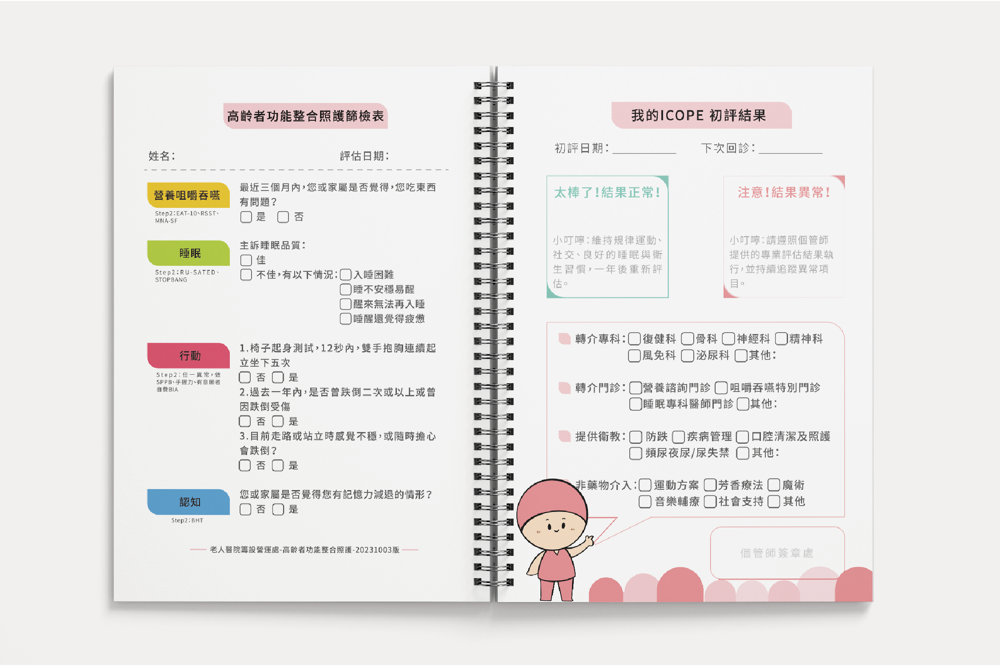
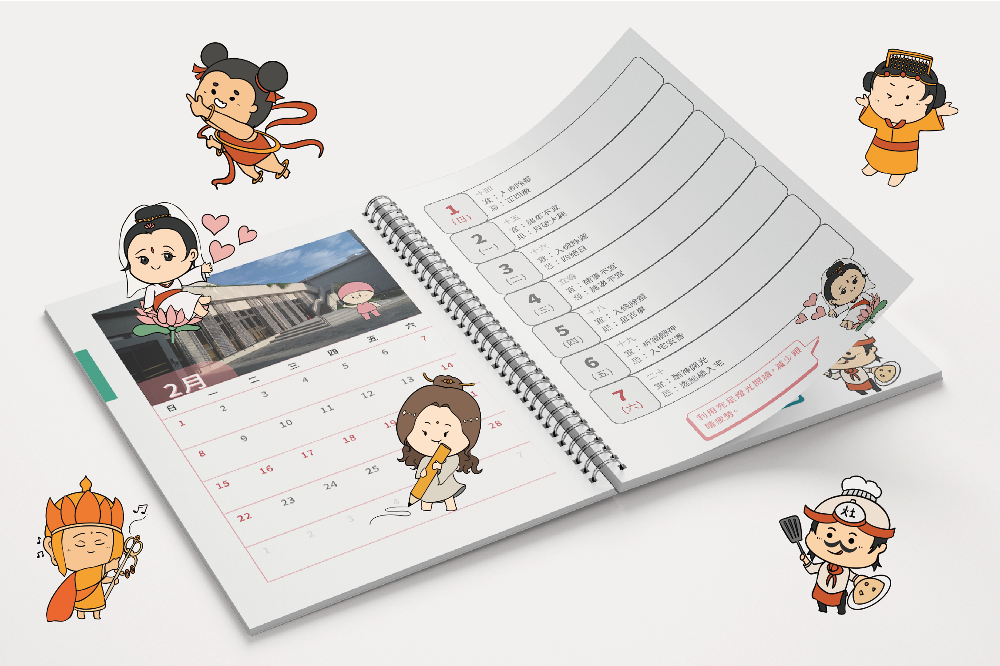

01. Stakeholders and Needs


醫病之間的資訊落差
在成大醫院的高齡照護體系中，個管師難以精準掌握病患居家狀況（需要多方溝通、找不到病患）；而長者也常因為看不懂生硬的醫療數據，缺乏病識感與主動照護的意願，導致嚴重的資訊落差。
02. Design Strategy
雙向溝通機制的建立

數據紀錄整合
結合每日基礎紀錄與第 1、3、6 個月的定期評估機制，協助個管師長期追蹤病患變化，並可匯整各專科醫師建議，建構一致的溝通平台。

神明各司其職：感性轉化
配合衛福部推動的六力評估（ICOPE）不同面向，我們將生硬指標轉化為貼近長輩生活的神祇人物。例如：地藏王菩薩負責聽力、觀世音菩薩負責視力、媽祖照看心理狀況。神明會提供自己領域的健康小建議。
03. Value Proposition
"
做紀錄可以讓我變得更健康，
我願意試試。
來自 74 歲的個案